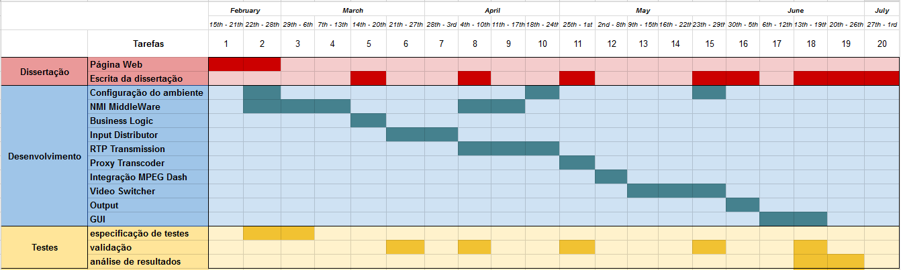

Virtualização de Estúdios Móveis na Produção de Conteúdos Audiovisuais em Direto
Na cobertura de eventos televisivos em direto, como por exemplo um jogo de futebol, existem vários intervenientes, nem sempre geograficamente próximos, que trabalham em conjunto: as várias câmaras espalhadas pelo recinto, as entrevistas rápidas junto ao recinto, a produção responsável por adicionar gráficos e animações que tornam a experiência de visualização mais rica e intuitiva e os comentadores e analistas, que acompanham o evento em direito, e que podem estar tanto no recinto como no estúdio.
Descrição
A produção de eventos televisivos em direto, pela sua própria natureza, requer requisitos bastante restritos: a entrega de vídeo e áudio com o mínimo de atraso possível, mantendo os requisitos de qualidade e segurança que a indústria televisiva requer para garantir a qualidade de experiência (QoE, em inglês) aos telespectadores.
O método atual (e que vários autores chamam de tradicional) baseia-se na produção remota com base em camiões de produção móveis, ou como é chamado na gíria, Outside Broadcasting (OB) vans. Uma OB van pode custar vários 12 milhões de dólares, principalmente devido à grande quantidade e diversidade de equipamento que contém. Em muitos casos pode ser necessária a utilização de várias unidades, principalmente pela natureza distribuída dos eventos em direto , como por exemplo a cobertura de um ato eleitoral. Esta necessidade, assim como a ligação satélite que permite a conexão entre a OB van e o estúdio televisivo, eleva os custos e a complexidade da produção televisiva.
Apesar de um estúdio de produção moderno já utilizar extensivamente o protocolo IP, a sua utilização permite guardar e arquivar materiais multimédia para que estejam disponíveis ao longo de toda a cadeia de produção. Da mesma forma, esta infraestrutura permitiu servir os espetadores com serviços de video on demand (VOD) como o Netflix e o Hulu. Apesar disso, esta é apenas uma pequena parte do workflow na produção televisiva.
Com o desenvolvimento da arquitetura dos serviços cloud e o aparecimento de frameworks para desenvolver e operar operações time-critical, como a produção televisiva de eventos em direto, e o aumento da performance das redes, passa a ser possível pensar num IP Studio, onde todo o workflow destes eventos possa estar virtualizado na cloud, aproveitando todos os benefícios que esta oferece.
Motivação
Com a virtualização da cobertura televisiva de eventos em direto pretende-se eliminar (ou pelo menos reduzir) a utilização da OB van e das ligações por satélites e substituí-las por uma aplicação distribuída na cloud suportada pela transmissão de vídeo sobre IP. Assim, as várias streams que resultam da cobertura do evento serão enviadas, via IP, para uma aplicação distribuída na cloud. Essa aplicação será responsável por fornecer ao realizador uma interface, através de uma aplicação web, que lhe permita comutar entre as várias streams de entrada, mais comumamente chamada de Vision Mixer.
Objetivos
O trabalho a realizar visa desenvolver um protótipo de um Virtual Vision Mixer que permita a comutação em tempo real entre as várias streams, assim como a sincronização entre as mesmas (apesar do assincronismo da transmissão de vídeo/áudio por IP). Adicionalmente, deve ser possível controlar este protótipo através de uma aplicação web. Sendo uma aplicação distribuída na cloud, espera-se que exista modularidade e expansibilidade, de forma a ajustar a solução aos mais diferentes e variados cenários. Para tal, será necessário implementar uma arquitetura modular e genérica, que permita a interação entre os vários intervenientes e componentes de um estúdio móvel.
É, também, essencial que, tratando-se de um método que visa substituir o atualmente utilizado, se garanta a fiabilidade e qualidade que estes últimos oferecem.
Plano de Trabalho
Orientação
Esta dissertação realiza-se em ambiente empresarial, em colaboração com a MOG Technologies e sob a supervisão do Professor Ademar Aguiar.
Referências
- Brightwell, P. J., J. D. Rosser, R. N. J. Wadge, and P. N. Tudor. 2014. “The IP Studio.” SMPTE Motion Imaging Journal 123 (2): 31–36. doi:10.5594/j18382.
- Davies, A. S. 2011. “The Silver Lining—Utilizing Cloud Computing in Broadcast Applications.” SMPTE Motion Imaging Journal 120 (2): 30–36. doi:10.5594/j18017XY.
- Evans, Kieran, Jernej Trnkoczy, George Suciu, Victor Suciu, Paul Martin, Junchao Wang, Zhiming Zhao, et al. 2015. “Dynamically Reconfigurable Workflows for Time-Critical Applications.” In Proceedings of the 10th Workshop on Workflows in Support of Large-Scale Science - WORKS ’15, 1–10. New York, New York, USA: ACM Press. doi:10.1145/2822332.2822339.
- Footen, John, and Mohan Ananthanarayanan. 2012. “Service-Oriented Architecture and Cloud Computing in the Media Industry.” SMPTE Motion Imaging Journal 121 (2): 22–30. doi:10.5594/j18145.
- Gogouvitis, S. V., M. C. Jaeger, H. Kolodner, D. Kyriazis, F. Longo, M. Lorenz, A. Messina, M. Montagnuolo, E. Salant, and F. Tusa. 2013. “Vision Cloud: A Cloud Storage Solution Supporting Modern Media Production.” SMPTE Motion Imaging Journal 122 (7): 30–37. doi:10.5594/j18341.
- Jachetta, Jim. 2015. “IP to the Camera – Completing the Broadcast Chain.” In IP Streams, Control, and Production, 1.53–29. Society of Motion Picture and Television Engineers. doi:10.5594/M001591.
- Koh, C. C. 2013. “Next-Generation Techniques to Protect and Secure Realtime IP Media Transport.” SMPTE Motion Imaging Journal 122 (5): 32–38. doi:10.5594/j18300.
- Kojima, Toshiaki, John J. Stone, Jian-Rong Chen, and Paul N. Gardiner. 2015. “A Practical Approach to IP Live Production.” SMPTE Motion Imaging Journal 124 (2): 29–40. doi:10.5594/j18514.
- Kovalick, Al. 2013. “The Fundamentals of the All-IT Media Facility.” In SMPTE 2013 Annual Technical Conference & Exhibition, 1–14. IEEE. doi:10.5594/M001497.
- Krug, Alfred. 2015. “IT-TV-Live An Integrated Concept for IP-Based Distributed Broadcast Production with ‘SDI Quality.’” In IP Streams, Control, and Production, 1.57–16. Society of Motion Picture and Television Engineers. doi:10.5594/M001595.
- Montalvo, Luis, Gael Mace, Claude Chapel, Serge Defrance, Thierry Tapie, and Jean Le Roux. 2009. “Implementation of a TV Studio Based on Ethernet and the IP Protocol Stack.” In 2009 IEEE International Symposium on Broadband Multimedia Systems and Broadcasting, 1–22. IEEE. doi:10.1109/ISBMSB.2009.5133737.
- Openshaw, Eric, and Glen Sakata. 2013. “Playout Automation in a Virtual Environment.” In SMPTE 2013 Annual Technical Conference & Exhibition, 1–19. IEEE. doi:10.5594/M001501.
- Zhao, Z, P Martin, J Wang, and A Taal. 2015. “Developing and Operating Time Critical Applications in Clouds: The State of the Art and the SWITCH Approach.” Procedia Computer …. http://www.sciencedirect.com/science/article/pii/S1877050915030653.
Sobre o autor
Adora resolver problemas, principalmente os mais difíceis, de forma criativa e instintiva. É capaz de ver conexões e proporcionar uma nova visão, aproveitando todas as oportunidades para contribuir e se tornar um membro interativo e consultado da equipa.
Os conhecimentos na concepção, arquitetura e desenvolvimento software e o seu raciocínio matemático permitem comunicar ideias de forma clara, concisa e objetiva.